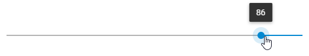
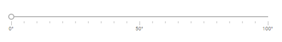
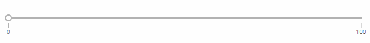
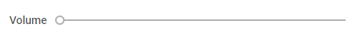
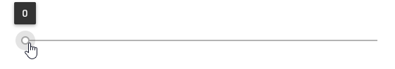

It is possible to define the value the thumb of the slider will be set at on the initialization of the component:
var slider = new dhx.Slider("slider_container", {
value:20
});
You can adjust the configuration of Slider so that its scale would render values in the reverse order, i.e. from the maximal value to the minimal one.

To launch this mode, make use of the inverse property set to true:
var slider = new dhx.Slider("slider_container", {
inverse:true,
min: 100,
max: 0,
step:1
});
Related sample: Slider. Inverse Mode Of The Slider
The minimal and maximal values define the start and end points of the slider. You can specify them via the corresponding configuration properties - min and max. The default values are 0 and 100, correspondingly.
var slider = new dhx.Slider("slider_container", {
min:1,
max:150
});
Besides the standard slider with one thumb, you can create a slider with two thumbs, that is a range slider. For this, you need to use the range:true option in the slider configuration object and define an array with the min and max values for the range:
var slider = new dhx.Slider("slider", {
min: 0,
max: 100,
value: 0,
step: 1,
range: true, value: [25, 75] });
Related sample: Slider. Range Mode Of The Slider
There are more details given in the article Range Mode.
You can configure the look and feel of the Slider scale via the corresponding properties of the Slider configuration object:

var slider = new dhx.Slider("slider_container", {
tick: 5,
majorTick:10,
tickTemplate: function(major_tick){
return major_tick + "°";
}
});
Related sample: Slider. Custom Scale
In case you want to mark just the minimal and maximal values with ticks, you need to:

var slider = new dhx.Slider("slider", {
max:100, min:0, tick:100, majorTick:1
});
There is a possibility to show a label next to the slider.

There are two properties that allow manipulating the label of the slider:
var slider = new dhx.Slider("slider_container", {
label:"Volume",
// label is rendered on the same level with the trackbar
labelPosition:"left"
});
Related sample: Slider. Slider Label
The step option defines the size of each jump between values of the slider. By default, the value of the step is set to 1. You can change this property via the Slider configuration object:
var slider = new dhx.Slider("slider_container", {
step:2
});
You can specify a tooltip that will display changeable values of the slider when the user moves the slider's thumb.

There is the tooltip property that enables rendering the slider value over the thumb:
var slider = new dhx.Slider("slider_container", {
tooltip:true
});
Related sample: Slider. Tooltip For The Slider
By default, a slider scale is placed horizontally, but you can arrange it vertically via the mode property of the Slider configuration object:
var slider = new dhx.Slider("slider_container", {
mode:"vertical"
});
Related sample: Slider. Vertical Mode Of The Slider
Back to top